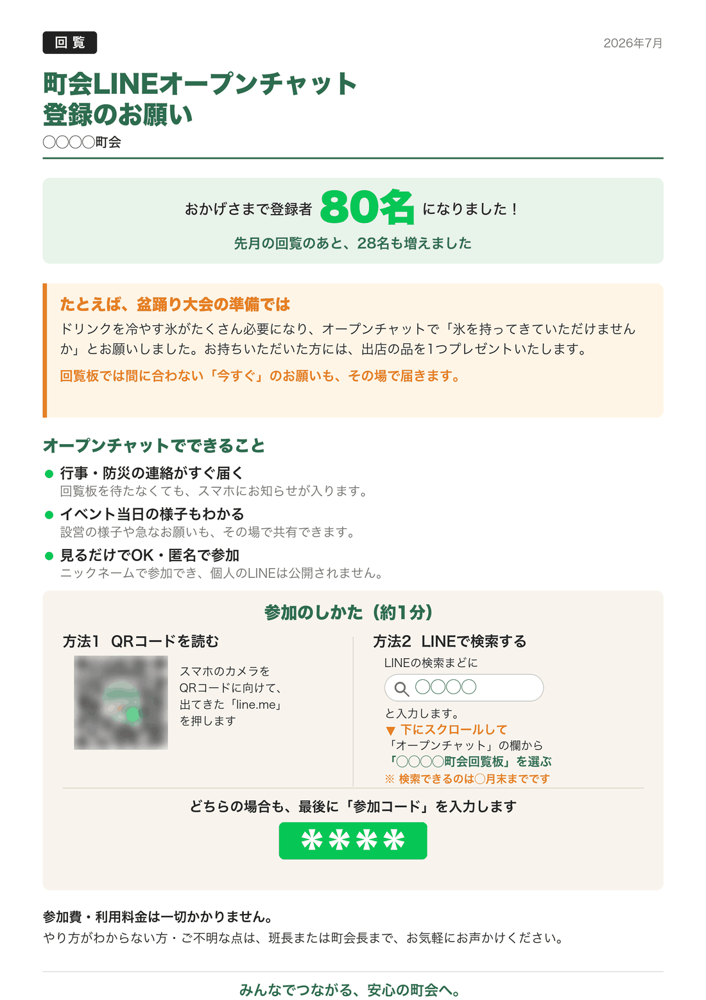

こんにちは、まっさんです。
町内会でLINEのグループ（オープンチャット）を始めたものの、「作ったはいいけど人が集まらへん」。これ、うちも通ってきた道です。
うちでは回覧板で登録のお願いを回していて、今度で3回目になります。1回目のあとで約50人、2回目のあとで80人。少しずつですが、着実に増えてきました。
今日は、これから配る3回目のチラシで工夫したことを共有します。実物がこちらです。

※ 町会名・合言葉・QRコードは伏せています
デジタル化を進めている私が言うのもなんですが、紙の回覧板は今でもよく読まれています。
実は今回、「同じお願いを何回も回すのは、しつこいだけで効果ないんちゃうか」と迷いました。でも数字を見たら、1回目の配布のあとで約50人、2回目のあとで80人と、回覧を回すたびにきれいに増えている。地域によるとは思いますが、少なくともうちでは、まだ紙が一番届く道具でした。
大事なのは「同じ紙をもう一度」ではなく「中身を変えて出す」ことやと思います。ここからが本題です。
今回のチラシでは、真ん中にこう書きました。
ポイントは「今何人か」だけやなく、「どれだけ増えたか」も書くことです。数字が動いていると「へえ、みんな入ってるんや」と伝わる。人は止まっているものより、動いているものに入りたくなるみたいです。
2回目のチラシには、便利な点を丁寧に並べていました。今回はそれを削って、かわりに実際にあった話を1つだけ入れました。
盆踊りの準備で、ドリンクを冷やす氷が足りなくなりそうになったんです。それでLINEに「氷を持ってきていただけませんか」とお願いを流しました。持ってきてくださった方には、出店の品を1つプレゼントするという形で。
「便利です」「早いです」と10行書くより、こういう話が1つある方が伝わります。回覧板は回るのに2〜3週間かかる。その間に終わってしまう用事があることを、みんな知っているからです。
これが今回いちばん変えたところです。2回目まではQRコードだけでした。
でもよく考えたら、QRコードを読むのが苦手な方はけっこういます。そこで今回は入り口を2つ載せました。
検索から入れるようにするため、一時的にグループを「検索して見つかる」設定に変えました。ただし誰でも入れると困るので、参加するときに合言葉（参加コード）を入れてもらう設定はそのままにしています。合言葉は回覧板にしか書いていないので、町会の方以外は入ってこられません。
あわせて「検索できるのは◯月末までです」と期限も書きました。理由は2つあります。1つは、期限があると後回しにされにくいから。もう1つは、いつまでも検索できる状態にしておくと、町会以外の方の目に触れる機会が増えてしまうからです。合言葉があるとはいえ、わざわざ危ない状態を続ける必要はありません。期間が過ぎたら、検索できない設定に戻すつもりです。
ここは実際に自分のスマホで試して気づいたことです。
その1、「青い文字を押してください」は間違いでした。最初そう書いていたんですが、iPhoneでQRを読むと出てくるのは黄色い枠でした。機種によって色が違うんです。なので色を書くのはやめて、「出てきた『line.me』を押す」と、文字そのものを書くことにしました。
その2、検索結果は下までスクロールしないと出てきません。LINEで検索すると「友だち」「グループ」「トーク」…と並んで、オープンチャットはずっと下の方にあります。これを知らないと「出てけえへんやん」で終わってしまう。だからチラシに「▼下にスクロールして」と、わざわざ矢印つきで書きました。
今回もデザインソフトは使っていません。AIに「こういう内容でA4のチラシを作って」と日本語で頼んで、出てきたものを見ながら「ここを直して」と伝える、その繰り返しです。
面白かったのは、QRコードを作り直さずに済んだことです。先月のPDFの中からQRコードだけを取り出して、そのまま新しいチラシに使ってくれました。作り直すと読み取れなくなるリスクがあるので、これは助かりました。
途中、私が「盆踊りはまだ開催してへんよ」と伝えたら、「氷を持ってきてくれました」という文章を「持ってきていただけませんかとお願いしました」に直してくれました。回覧板は町会のみんなが読むものなので、事実と違うことは書けません。こういうところを一緒に見てくれる相手がいるのは、正直ありがたいです。
正直、私も最初は「LINEなんか誰も入ってくれへんやろ」と思っていました。それが2回の回覧で80人。目標の150人まで、まだ半分ちょっとです。
今回の3回目のチラシは、これから配ります。この工夫が効くのかどうかは、正直やってみないとわかりません。結果が出たら、増えても増えなくても、また正直に報告します。
同じように「町内会のグループを作ったけど人が集まらない」と悩んでいる方の、何かのヒントになればうれしいです。
ほな、また。